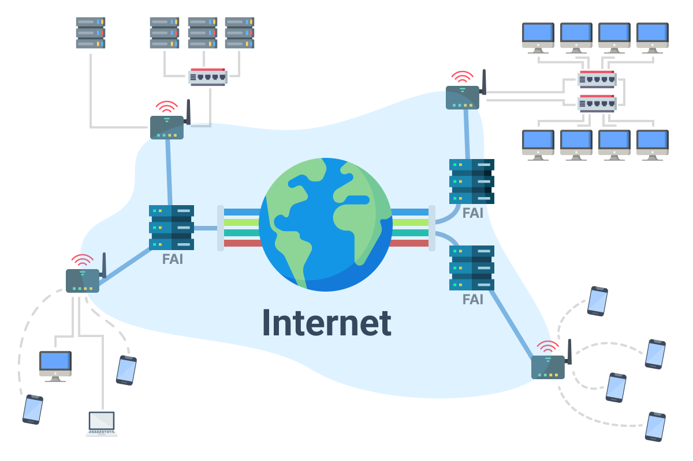
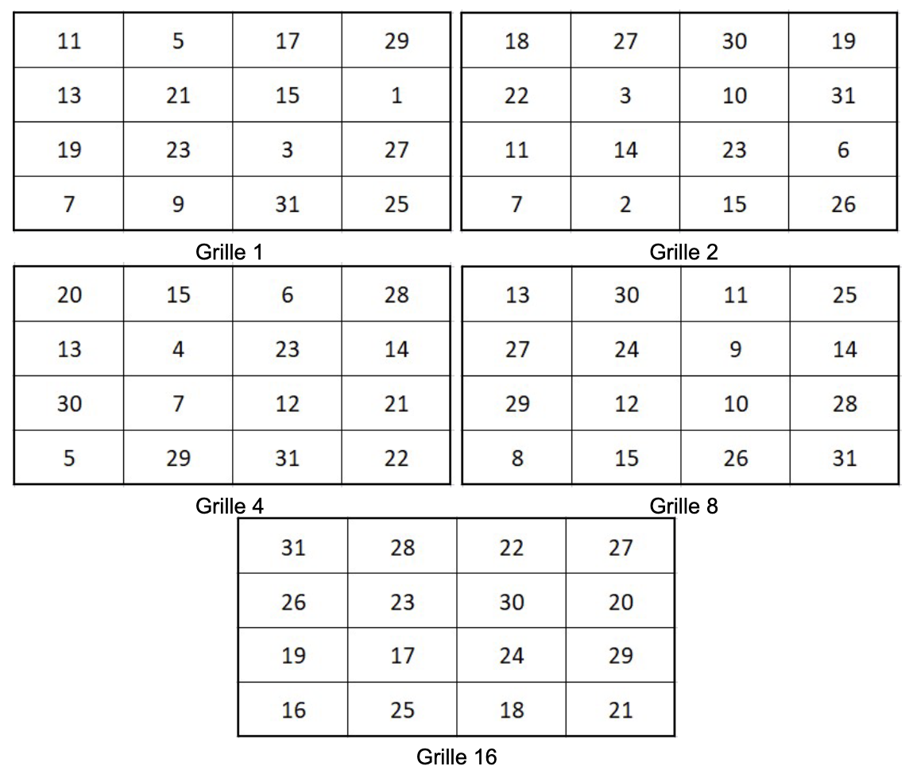
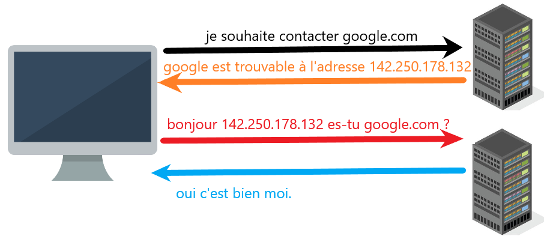
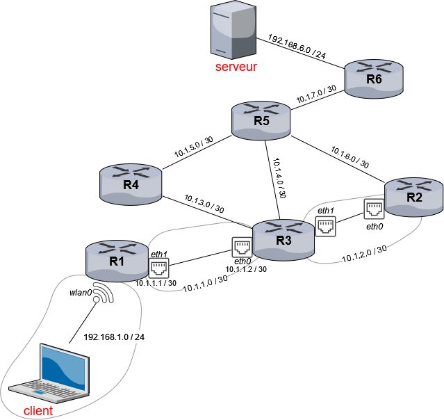

Thème 1 — 🌐 Internet¶
Séance 1 — Comment faire communiquer une ville ?¶
Projet fil rouge — Montesquéria
Bienvenue à Montesquéria, une ville du futur.
Tout au long de l'année, vous allez participer à sa construction et découvrir les technologies qui permettent à ses habitants de communiquer, de s'informer, de se déplacer et d'interagir.
Objectifs de la séance¶
À la fin de cette séance, je dois être capable de :
- comprendre ce qu'est un réseau informatique ;
- expliquer pourquoi on relie des ordinateurs entre eux ;
- distinguer un ordinateur isolé d'un ordinateur connecté à un réseau ;
- représenter simplement un réseau ;
- comprendre qu'un réseau permet de faire circuler des informations ;
- identifier quelques problèmes liés à la communication entre machines.
À lire avant de commencer
- Les fichiers fournis doivent être utilisés et complétés.
- Certains moments de l'activité sont prévus pour faire valider votre travail.
I. Bienvenue à Montesquéria¶
1. La ville du futur¶
Nous sommes en 2050.
Montesquéria est une ville entièrement équipée d'ordinateurs.
On trouve notamment :
- 🏫 un lycée ;
- 🏥 un hôpital ;
- 🏛️ une mairie ;
- 📚 une bibliothèque ;
- 🏠 des logements ;
- 🏢 des entreprises ;
- 🚉 une gare ;
- 🚒 une caserne de pompiers.
Chaque bâtiment possède plusieurs ordinateurs.
Problème¶
La mairie souhaite pouvoir envoyer rapidement une information à l'hôpital.
Par exemple :
« Une situation d'urgence vient d'être signalée. »
Mais les deux ordinateurs sont actuellement isolés.
Question 1
Comment pourrait-on permettre aux deux ordinateurs de communiquer ?
💡 Proposez plusieurs solutions.
À lire avant de commencer
- Les fichiers fournis doivent être utilisés et complétés.
- Certains moments de l'activité sont prévus pour faire valider votre travail.
2. Première solution : relier les ordinateurs¶
Une première idée consiste à relier directement les deux ordinateurs.
L'information peut maintenant circuler d'un ordinateur à l'autre.
On vient de créer un réseau !
À retenir
Un réseau informatique est un ensemble d'équipements reliés entre eux afin de pouvoir échanger des informations.
II. Et si la ville grandissait ?¶
La mairie décide maintenant de connecter toute la ville.
On souhaite permettre aux différents bâtiments de communiquer :
Question 2
Quel est le problème avec cette organisation si la ville possède 1 000 bâtiments ?
Réfléchissez en groupe.
À lire avant de commencer
- Les fichiers fournis doivent être utilisés et complétés.
- Certains moments de l'activité sont prévus pour faire valider votre travail.
💭 Quelques problèmes possibles¶
- Il faudrait énormément de câbles.
- Chaque ordinateur devrait être relié à beaucoup d'autres.
- L'installation serait difficile à gérer.
- Si un câble est coupé, certaines communications pourraient ne plus fonctionner.
- Ajouter un nouveau bâtiment deviendrait compliqué.
Il faut donc trouver une meilleure organisation.
III. Une nouvelle idée¶
Les ingénieurs de Montesquéria proposent une nouvelle solution.
Au lieu de relier directement chaque ordinateur à tous les autres, on va utiliser un équipement intermédiaire.
Toutes les machines sont reliées à cet équipement.
Lorsqu'un ordinateur veut communiquer avec un autre, les informations passent par cet équipement.
À vous de réfléchir
Quel pourrait être le rôle de cet équipement ?
Cet équipement s'appelle un switch.
On parle également de commutateur réseau.
Le switch permet de connecter plusieurs appareils au sein d'un même réseau.
Lorsqu'un appareil envoie des données, le switch les reçoit et les transmet vers l'appareil concerné.
À retenir
Un switch permet de connecter plusieurs appareils au sein d'un même réseau local.
IV. Le réseau du lycée¶
On peut appliquer exactement la même idée à notre établissement.
Imaginons que le lycée possède :
- 35 ordinateurs dans une salle ;
- 20 ordinateurs dans une autre salle ;
- des ordinateurs dans l'administration ;
- des ordinateurs au CDI ;
- des imprimantes ;
- des serveurs.
On ne souhaite évidemment pas relier chaque machine directement à toutes les autres.
On va donc organiser les connexions.
L'équipement central permet de connecter les différentes machines.
Question
Que se passerait-il si nous ajoutions 100 ordinateurs supplémentaires ?
Le switch permet justement d'ajouter facilement de nouvelles machines au réseau.
À retenir
Un réseau local est un réseau qui relie des équipements situés dans un espace géographique limité, par exemple une maison, un lycée ou un bâtiment.
V. Plusieurs réseaux locaux¶
Nous savons maintenant construire un réseau local.
Mais Montesquéria possède plusieurs bâtiments.
Il est tout à fait possible que chaque bâtiment possède son propre réseau local.
Nous allons considérer quatre réseaux :
- 🏫 le réseau du lycée ;
- 🏛️ le réseau de la mairie ;
- 🏥 le réseau de l'hôpital ;
- 📚 le réseau de la bibliothèque.
Chaque réseau local ressemble à ceci :
Attention
Ces quatre réseaux sont distincts.
Le réseau du lycée n'est pas le réseau de la mairie.
Le réseau de la mairie n'est pas celui de l'hôpital.
Chaque bâtiment possède son propre réseau local.
VI. Comment relier plusieurs réseaux ?¶
Nous avons maintenant un problème.
Un ordinateur du lycée doit pouvoir communiquer avec un ordinateur de la mairie.
Mais les deux ordinateurs appartiennent à deux réseaux différents.
Le switch permet de connecter des appareils dans un même réseau local.
Il nous faut donc un nouvel équipement.
À vous de réfléchir
Comment pourrait-on relier deux réseaux différents ?
🔀 Le routeur¶
Pour relier plusieurs réseaux différents, on utilise un routeur.
On peut représenter la situation ainsi :
Le routeur fait le lien entre les deux réseaux.
Il permet aux informations de passer d'un réseau à un autre.
À retenir
Un routeur est un équipement qui permet de relier plusieurs réseaux différents et d'acheminer les informations d'un réseau vers un autre.
Switch → à l'intérieur d'un réseau
Routeur → entre plusieurs réseaux
VII. Activité — Construisons le réseau de Montesquéria¶
Mission
Vous devez maintenant proposer une organisation du réseau informatique de Montesquéria.
La ville de Montesquéria possède les bâtiments suivants :
- 🏛️ Mairie ;
- 🏫 Lycée ;
- 🏥 Hôpital ;
- 📚 Bibliothèque ;
- 🚒 Caserne de pompiers ;
- 🚉 Gare ;
- 🏢 Entreprise.
Chaque bâtiment possède au moins un ordinateur.
Votre mission¶
Vous devez proposer une organisation permettant à tous les bâtiments de communiquer.
Contraintes¶
Votre réseau doit :
- permettre à tous les bâtiments de communiquer ;
- éviter de relier directement chaque bâtiment à tous les autres ;
- permettre d'ajouter facilement un nouveau bâtiment ;
- continuer à fonctionner même si une connexion est coupée.
La quatrième contrainte vous demande de réfléchir au problème rencontré précédemment : que se passe-t-il lorsqu'une connexion est coupée ?
Travail demandé¶
Sur votre feuille, représentez votre réseau.
Vous devez faire apparaître :
- représentez les bâtiments ;
- représentez les ordinateurs ;
- représentez les connexions ;
- ajoutez les équipements intermédiaires que vous jugez nécessaires ;
- expliquez votre choix.
À lire avant de commencer
- Les fichiers fournis doivent être utilisés et complétés.
- Certains moments de l'activité sont prévus pour faire valider votre travail.
VIII. Et maintenant... Internet 🌍¶
Nous savons maintenant construire plusieurs réseaux locaux et les relier entre eux.
Mais Montesquéria n'est pas la seule ville du monde.
D'autres villes possèdent elles aussi leurs propres réseaux.
Nous avons commencé avec deux ordinateurs (1er réseau) :
Puis nous avons construit un réseau permettant de connecter plusieurs ordinateurs :
Nous pouvons alors créer plusieurs réseaux indépendants :
Mais les ordinateurs du réseau A ne peuvent pas communiquer avec ceux du réseau B.
Il faut donc trouver un moyen de relier ces deux réseaux :
Nous avons maintenant deux réseaux reliés entre eux.
On peut recommencer avec de nombreux autres réseaux :
RÉSEAU A
┌─────────────┐
│ 💻 ─ 🔲 ─ 💻 │
└──────┬──────┘
│
🔀 -- 🔀 -- 🔀
│ ╱ │ ╲ │
│ ╱ │ ╲ │
🔀 -- 🔀 -- 🔀
│ │ │
RÉSEAU B RÉSEAU C RÉSEAU D
│ │ │
💻─🔲─💻 💻─🔲─💻 💻─🔲─💻
Nous obtenons progressivement un réseau de réseaux.
C'est l'idée fondamentale derrière Internet.

À retenir
Internet est un réseau mondial qui relie entre eux une multitude de réseaux informatiques.
IX. Comment faire circuler une information ?¶
Imaginons que l'ordinateur du lycée veuille envoyer un message à celui de l'hôpital.
Le message doit parcourir le réseau.
Il peut passer par plusieurs équipements avant d'arriver à destination.
On peut comparer cela au transport d'un colis :
Sur Internet, les informations sont également transportées à travers différents équipements.
À retenir
Une information peut traverser plusieurs équipements et plusieurs réseaux avant d'atteindre son destinataire.
X. Un problème apparaît... 🚧¶
Internet permet maintenant de relier une multitude de réseaux.
Mais un nouveau problème apparaît.
Un nouvel habitant arrive à Montesquéria.
Il utilise son ordinateur et souhaite envoyer un message à la mairie.
Question 3
Comment l'ordinateur de l'habitant sait-il à quel ordinateur envoyer son message ?
Après tout, il y a maintenant des centaines, puis des milliers d'ordinateurs dans la ville.
À lire avant de commencer
- Les fichiers fournis doivent être utilisés et complétés.
- Certains moments de l'activité sont prévus pour faire valider votre travail.
💭 Imaginez la situation¶
Si je vous dis :
« Envoyez ce message à Paul. »
Cela ne suffit probablement pas.
Il faudrait savoir quel Paul, où il habite, ou disposer d'une information permettant de l'identifier.
Les ordinateurs rencontrent exactement ce problème.
XI. Donner une identité aux machines 🏷️¶
Pour pouvoir communiquer correctement, les machines doivent pouvoir être identifiées.
On pourrait par exemple imaginer que chaque ordinateur possède un numéro :
Ordinateur de la mairie → 1
Ordinateur de l'hôpital → 2
Ordinateur du lycée → 3
Ordinateur de la bibliothèque → 4
On peut alors demander :
« Envoie le message à la machine numéro 3. »
Mais est-ce suffisant ?
Que se passe-t-il si la ville possède 1 million d'ordinateurs ?
Comment attribuer ces numéros ?
Comment savoir où se trouve une machine ?
Comment faire pour que les informations trouvent automatiquement leur chemin ?
Il faut donc un système permettant aux machines d'être identifiées et aux informations de trouver leur destination.
Nous verrons la réponse à ce problème lors de la prochaine séance.
XII. Bilan de la séance¶
Ce que nous avons découvert¶
Nous sommes partis d'un problème très simple :
Comment faire communiquer deux ordinateurs ?
Puis nous avons progressivement construit :
Nous avons également rencontré plusieurs questions :
- Comment identifier une machine ?
- Comment savoir où envoyer une information ?
- Comment faire circuler une information ?
- Comment relier plusieurs réseaux ?
- Que se passe-t-il si une connexion est coupée ?
- Comment un message arrive-t-il au bon destinataire ?
Ces questions vont nous permettre de découvrir progressivement le fonctionnement d'Internet.
📝 Trace écrite¶
À retenir
Un réseau informatique est un ensemble d'équipements reliés entre eux afin d'échanger des informations.
Un réseau local relie des équipements situés dans un espace géographique limité, comme une maison, un lycée ou un bâtiment.
Un switch permet de relier plusieurs appareils au sein d'un même réseau local.
Un routeur permet de relier plusieurs réseaux différents.
Internet est un réseau mondial de réseaux informatiques.
Pour communiquer sur un réseau, les machines doivent notamment pouvoir être identifiées et les informations doivent pouvoir être acheminées vers leur destination.
Prochaine étape : les adresses IP¶
Dans la prochaine séance, nous allons résoudre le problème rencontré à Montesquéria :
Comment identifier précisément un ordinateur sur un réseau ?
Nous découvrirons notamment :
- les adresses IP ;
- leur représentation ;
- pourquoi elles sont nécessaires ;
- comment les ordinateurs les utilisent pour communiquer.
Et nous verrons que derrière une adresse comme :
se cache une représentation en binaire.
Mission pour la prochaine séance
À votre avis, pourquoi utilise-t-on des nombres pour identifier les ordinateurs plutôt que leurs noms ?
Séance 2 — Comment identifier une machine et transmettre des données dans un réseau ?¶
Projet fil rouge — Montesquéria
Dans la séance précédente, nous avons découvert comment construire des réseaux et comment les relier entre eux.
Nous avons cependant laissé une question en suspens :
Comment un ordinateur sait-il à quel autre ordinateur envoyer une information ?
Aujourd'hui, nous allons découvrir le système utilisé pour identifier les machines sur Internet : les adresses IP
Objectifs de la séance¶
À la fin de cette séance, je dois être capable de :
- expliquer ce qu'est une adresse IP ;
- expliquer pourquoi elle est nécessaire ;
- reconnaître une adresse IPv4 ;
- comprendre comment une machine utilise l'adresse IP d'une autre machine pour lui envoyer des données.
- comprendre comment assurer une transmission fiable des données dans un réseau.
À lire avant de commencer
- Les fichiers fournis doivent être utilisés et complétés.
- Certains moments de l'activité sont prévus pour faire valider votre travail.
I. Le problème de Montesquéria¶
Revenons à notre ville.
Dans la séance précédente, nous avons appris que les différents réseaux de Montesquéria peuvent être reliés entre eux.
Imaginons maintenant que l'ordinateur du lycée souhaite envoyer un message à celui de l'hôpital.
Le message doit traverser plusieurs équipements.
Mais un problème apparaît :
Question 1
Comment l'ordinateur du lycée sait-il que le message doit aller jusqu'à l'ordinateur de l'hôpital ?
Comment pourrait-il indiquer précisément quel ordinateur est le destinataire ?
💭 Une comparaison avec le courrier¶
Imaginez que vous vouliez envoyer une lettre.
Si l'on précise uniquement le prénom de la personne sur la lettre, cette dernière ne pourra pas atteindre son destinataire avec un service de courrier classique.
Il faut donc une information permettant d'identifier précisément le destinataire.
Par exemple :
Sur Internet, les ordinateurs rencontrent un problème similaire.
Ils ont besoin d'une adresse permettant d'identifier le destinataire.
II. L'adresse IP¶
Pour communiquer sur Internet, les machines utilisent notamment des adresses IP.
Par exemple :
On peut faire une analogie :
Lorsqu'un ordinateur veut envoyer des données à une autre machine, il doit notamment connaître l'adresse IP de destination.
À retenir
Une adresse IP permet d'identifier une interface réseau et de désigner une destination pour les communications utilisant le protocole IP.
III. À quoi ressemble une adresse IP ?¶
Nous allons commencer par IPv4, la version que nous allons utiliser dans cette séance.
Une adresse IPv4 est composée de quatre nombres séparés par des points. Chaque nombre est compris entre 0 et 255.
Quelques exemples d'adresses valides :
Question 2
Parmi les propositions suivantes, lesquelles peuvent être des adresses IPv4 ?
A. 192.168.1.42
B. 10.0.0.1
C. 192.168.300.12
D. 172.16.5
E. 8.8.8.8
Justifiez votre réponse.
À retenir
Une adresse IPv4 est composée de 4 nombres, séparés par des points.
Chaque nombre peut aller de 0 à 255.
IV. Pourquoi les ordinateurs utilisent-ils des nombres ?¶
Les ordinateurs manipulent les informations sous forme de bits.
Un bit peut prendre deux valeurs : 0 ou 1.
Les ordinateurs utilisent donc naturellement le système binaire. Nous pouvons donc représenter chaque nombre d'une adresse IPv4 en binaire.
Par exemple :
devient :V. Un peu de binaire¶
Abracadabra¶

Comment ça fonctionne ?¶
Pour comprendre cette représentation, observons les valeurs associées aux positions d'un nombre binaire sur 8 bits :
Prenons :
On obtient :
Donc :
Ainsi :
À retenir
Un nombre d'une adresse IPv4 peut être représenté en binaire.
Chaque partie d'une adresse IPv4 utilise 8 bits, soit un octet. Il y a 4 octets, une adresse IPv4 contient donc :
4 × 8 = 32 bits. Avec 32 bits, il est donc possible d’écrire \(2^{32}\) adresses IPv4 différentes, soit environ 4 milliards.
Et avec IPv6 ?
Le nombre d'adresses IPv4 étant limité, un nouveau protocole a été créé : IPv6.
Une adresse IPv6 est codée sur 128 bits. Il est donc possible d'écrire \(2^{128}\) adresses IPv6 différentes, soit environ 340 milliards de milliards de milliards de milliards d'adresses.
Ce nombre est suffisamment grand pour attribuer une adresse unique à un très grand nombre d'appareils.
Une adresse IPv6 s'écrit en hexadécimal, par exemple :
2001:0db8:85a3:0000:0000:8a2e:0370:7334
Elle comporte 8 groupes de 4 chiffres hexadécimaux, séparés par des deux-points :.
Question 3
Convertissez les nombres suivants de la base 10 vers la base 2 (binaire).
1₁₀ → ______________________________
3₁₀ → ______________________________
6₁₀ → ______________________________
9₁₀ → ______________________________
12₁₀ → ______________________________
18₁₀ → ______________________________
37₁₀ → ______________________________
75₁₀ → ______________________________
150₁₀ → ______________________________
240₁₀ → ______________________________
Question 4
Convertissez les nombres suivants de la base 2 vers la base 10.
Question 5
Convertissez l'adresse IPv4 suivante en binaire : 192.168.1.10
Complétez :
192₁₀ →
168₁₀ →
1₁₀ →
10₁₀ →
L'adresse complète devient :
VI. Adresse source et adresse destination¶
Lorsqu'un ordinateur communique avec un autre, il faut savoir :
- qui envoie les données ;
- à qui elles sont destinées.
On utilise donc notamment deux adresses :
Par exemple :
On peut représenter le message ainsi :
┌─────────────────────────────────────┐
│ DONNÉES │
│ │
│ Source : 192.168.1.10 │
│ Destination : 192.168.3.20 │
└─────────────────────────────────────┘
À retenir
Lors d'une communication, on retrouve notamment :
Adresse source → la machine qui envoie les données.
Adresse destination → la machine vers laquelle les données sont envoyées.
VII. Deux protocoles essentiels : TCP et IP¶
Nous savons maintenant qu'une communication contient notamment :
- une adresse IP source : celle de l'expéditeur ;
- une adresse IP destination : celle du destinataire.
Le protocole IP permet donc d'indiquer où envoyer les données et de participer à leur acheminement à travers les réseaux.
Mais il reste un problème...
Question
Imaginez que le lycée envoie un fichier à l'hôpital.
Le fichier est assez volumineux et doit être envoyé en plusieurs morceaux.
Comment être sûr que tous les morceaux arrivent bien à destination et dans le bon ordre ?
Pour répondre à ce problème, Internet utilise notamment un autre protocole : TCP.
TCP s'occupe de la fiabilité de la communication entre l'expéditeur et le destinataire.
Lorsqu'un fichier est envoyé, les données peuvent être transmises en plusieurs morceaux.
Chaque morceau est transmis à travers le réseau.
Mais Internet n'est pas un système parfait : un morceau peut être perdu ou ne pas arriver correctement.
Par exemple :
Le morceau 2 n'est pas arrivé correctement. Le destinataire va indiquer à l'expéditeur les données qu'il a bien reçues, c'est le principe d'accusé réception.
📦 1 ───────────────────────────────→ ✅
📦 2 ───────────────────────────────→ ❌
📦 3 ───────────────────────────────→ ✅
📦 4 ───────────────────────────────→ ✅
← « J'ai reçu 1, 3 et 4.
Il me manque 2. »
📦 2 ───────────────────────────────→ ✅
TCP permet ainsi de détecter les données qui n'ont pas été reçues et de demander leur retransmission.
Une fois les données reçues, TCP permet également de les remettre dans le bon ordre.
À retenir
TCP permet d'assurer une transmission fiable des données.
Il permet notamment :
- de suivre les données transmises ;
- de détecter les données manquantes ;
- de demander leur retransmission ;
- de remettre les données dans le bon ordre.
Question 6
Associez chaque élément à son rôle.
A. IP
B. TCP
C. Adresse IP destination
D. Routeur
-
______ Indique le destinataire des données.
-
______ Permet de gérer la fiabilité de la transmission.
-
______ Permet d'acheminer les données entre différents réseaux.
-
______ Utilise les adresses IP pour participer à l'acheminement des données.
📝 Trace écrite¶
À retenir
Pour communiquer sur Internet, les données doivent pouvoir être adressées, acheminées et transmises de manière fiable.
Une adresse IP permet notamment de désigner la source et la destination d'une communication.
Le protocole IP utilise ces adresses pour permettre l'acheminement des paquets.
Le protocole TCP permet d'assurer une transmission fiable des données, notamment en gérant leur réception, leur ordre et leur retransmission en cas de problème.
Les routeurs permettent aux paquets de passer d'un réseau à un autre.
Prochaine étape — Comment retenir toutes ces adresses ?¶
Nous savons maintenant qu'un ordinateur peut communiquer avec un autre grâce notamment aux adresses IP.
Mais imaginons que nous voulions accéder au serveur du site de Montesquéria.
Faudrait-il vraiment retenir une adresse comme :
Et si le site possède une autre adresse IP demain ?
Les humains préfèrent utiliser des noms faciles à retenir :
Dans la prochaine séance, nous allons résoudre le problème rencontré à Montesquéria :
Comment Internet fait-il pour retrouver l'adresse IP correspondant à un nom comme
www.montesqueria.fr?
Nous découvrirons notamment :
- Ce qu'est un nom de domaine ;
- Le rôle du DNS ;
Séance 3 — Comment retrouver une machine et lui faire parvenir des données ?¶
Projet fil rouge — Montesquéria
Dans les séances précédentes, nous avons construit le réseau de Montesquéria.
Nous avons découvert les switchs, les routeurs, les adresses IP et le rôle de TCP.
Mais dans la vie quotidienne, personne ne demande à son ordinateur de se connecter à une adresse comme 142.250.74.196.
Alors comment faisons-nous pour retrouver un site ?
Et comment les données trouvent-elles leur chemin sur Internet ?
Objectifs de la séance¶
À la fin de cette séance, je dois être capable de :
- expliquer le rôle du DNS ;
- expliquer la différence entre un nom de domaine et une adresse IP ;
- retrouver l'adresse IP d'un ordinateur ;
- distinguer une adresse IP privée d'une adresse IP publique ;
- comprendre le principe du routage ;
- utiliser
traceroutepour observer le chemin suivi par des données ; - distinguer Internet et Web.
À lire avant de commencer
- Les fichiers fournis doivent être utilisés et complétés.
- Certains moments de l'activité sont prévus pour faire valider votre travail.
I. Comment retrouver un site ?¶
Dans Montesquéria, un habitant souhaite consulter le site de la mairie.
Il tape dans son navigateur :
Mais nous avons vu dans la séance précédente qu'une machine communique grâce à une adresse IP.
Question 1
Pourquoi le navigateur ne peut-il pas simplement utiliser le nom www.montesqueria.fr pour communiquer avec le serveur ?
De quoi a-t-il besoin ?
Le DNS¶
Pour faire le lien entre un nom de domaine et une adresse IP, Internet utilise le DNS.
DNS signifie Domain Name System.
On peut le comparer à un annuaire :
Le principe est donc :

Le navigateur peut alors utiliser l'adresse IP pour contacter le serveur.
À retenir
Le DNS permet de retrouver l'adresse IP associée à un nom de domaine.
Il permet aux utilisateurs d'utiliser des noms faciles à retenir plutôt que des adresses IP.
II. Observer le fonctionnement du DNS¶
Nous pouvons directement demander à un ordinateur de rechercher l'adresse IP associée à un nom de domaine.
Dans un terminal, on peut utiliser la commande :
Le résultat peut ressembler à :
À retenir
nslookup permet d'interroger un serveur DNS pour connaître l'adresse IP associée à un nom de domaine.
III. Quelle est l'adresse IP de mon ordinateur ?¶
Nous avons parlé des adresses IP comme si chaque ordinateur en possédait une.
Mais quelle est l'adresse IP de notre ordinateur ?
Nous pouvons directement l'observer.
Sur Windows¶
Dans le terminal, on peut utiliser :
On obtient notamment une ligne ressemblant à :
Sur macOS¶
Dans le terminal, on peut utiliser :
IV. Adresse IP privée ou publique ?¶
L'adresse que nous venons de trouver ressemble souvent à :
Cette adresse est une adresse IP privée.
Elle est utilisée à l'intérieur d'un réseau local.
Par exemple, dans une maison :

Ces adresses permettent aux appareils de communiquer à l'intérieur du réseau local.
Mais comment notre réseau communique-t-il avec Internet ?
La box possède également une adresse IP publique.
À retenir
Une adresse IP privée est utilisée dans un réseau local.
Une adresse IP publique permet d'identifier une connexion ou une interface utilisée pour communiquer sur Internet.
Plusieurs appareils d'un même réseau local peuvent donc utiliser des adresses privées différentes tout en partageant une même connexion à Internet.
Quelques plages d'adresses privées¶
Certaines plages d'adresses IPv4 sont réservées aux réseaux privés.
On rencontre notamment :
Par exemple :
sont des adresses privées.Question 2
Parmi les adresses suivantes, indiquer lesquelles sont des adresses IP privées :
192.168.0.158.8.8.810.12.4.7172.20.5.12172.40.2.891.198.174.192
Méthode
Pour reconnaître une adresse IP privée, il faut vérifier si elle appartient à l'une des trois plages étudiées.
V. Comment les données trouvent-elles leur chemin ?¶
Revenons à Montesquéria.
Un ordinateur du lycée veut communiquer avec un serveur situé ailleurs sur Internet.
Les deux machines ne sont pas directement reliées.

Les données passent donc par plusieurs routeurs.
Chaque routeur reçoit les données et détermine vers quel autre réseau les envoyer.
C'est le routage.
À retenir
Le routage consiste à déterminer par quels équipements les données doivent passer pour atteindre leur destination.
Les routeurs jouent un rôle essentiel dans ce fonctionnement.
Observer le chemin avec tracert¶
Nous pouvons observer une partie du chemin suivi par les données grâce à une commande.
Sur Windows¶
On utilise :
Sur macOS ou Linux¶
On utilise :
Question 3
Après exécution de la commande précédente, indiquer :
- Combien de sauts sont affichés ?
- Quelle est l'adresse IP du premier équipement ?
- Le chemin est-il constitué d'un seul routeur ?
- Le nombre de sauts est-il nécessairement le même pour deux sites différents ?
Attention
Le résultat de traceroute peut varier selon le moment, le réseau utilisé et le site choisi.
Certains équipements peuvent également ne pas répondre aux demandes de la commande.
L'objectif n'est donc pas de mémoriser le chemin obtenu, mais de comprendre le principe du routage.
VI. Internet et le Web, est-ce la même chose ?¶
Lorsque nous parlons d'Internet, nous pensons souvent aux sites Web.
Pourtant, Internet et le Web ne sont pas la même chose.
Internet est l'infrastructure qui permet aux machines et aux réseaux de communiquer.
Le Web est un service qui utilise Internet.
VII. Que se passe-t-il lorsque je consulte un site ?¶
Reprenons l'exemple du site de la mairie :
Plusieurs étapes sont nécessaires pour afficher le site.
Question 4
Remettre dans l'ordre les éléments suivants :
serveur Web — DNS — routeurs — nom de domaine — adresse IP
Puis expliquer en quelques lignes ce qui se passe lorsque l'on saisit :
https://www.montesqueria.fr
📝 Trace écrite¶
À retenir
Le DNS
Le DNS (Domain Name System) permet d'associer un nom de domaine à une adresse IP.
Les adresses IP
Une machine connectée à un réseau utilise une ou plusieurs adresses IP pour communiquer. On distingue notamment les adresses privées, utilisées dans les réseaux locaux, et les adresses publiques, utilisées pour les communications sur Internet.
Le routage
Les données peuvent traverser plusieurs routeurs avant d'atteindre leur destination. Le routage permet de déterminer le chemin à suivre entre les différents réseaux.
Le Web
Le Web est un service qui utilise Internet. Il permet notamment de consulter des pages Web à l'aide d'un navigateur et de serveurs Web.
Consulter un site Web
Lorsqu'un utilisateur saisit un nom de domaine dans son navigateur :
- le DNS permet de retrouver l'adresse IP du serveur ;
- les données sont acheminées grâce au routage et aux routeurs ;
- le serveur Web communique avec le navigateur pour fournir les ressources nécessaires à l'affichage du site.
Exposés – Thème 1 : Internet¶
Sujets des exposés sur Internet¶
Voici les sujets possibles :
- Sujet 1 : Réseaux pair à pair : intérêts et usages illicites.
- Sujet 2 : Internet : quel impact écologique pour la planète ?
- Sujet 3 : Internet : enjeux et coûts des câbles sous-marins.
- Sujet 4 : Internet : quels impacts sur les activités humaines ?
- Sujet 5 : Les métiers autour d'Internet : Administrateur réseaux (études, qualités et compétences, rôle)
- Sujet 6 : Les métiers autour d'Internet : Technicien / technicienne télécoms et réseaux
- Sujet 7 : Attaques : déni de service et phishing
- Sujet 8 : Attaques : ransomware et mail bombing
- Sujet 9 : Attaques : Man in the Middle et logiciels malveillants
- Sujet 10 : Internet en 2050 : quelles évolutions et quels nouveaux usages ?
- Sujet 11 : La naissance d'Internet : d'ARPANET au réseau mondial
Consignes générales¶
Chaque groupe doit réaliser un exposé oral sur le sujet qui lui a été attribué.
Durée¶
- 5 à 7 minutes de présentation ;
- 2 à 3 minutes de questions.
Support¶
- Un diaporama de 5 à 8 diapositives maximum.
- Des illustrations, schémas, photographies ou exemples concrets.
- Peu de texte sur les diapositives : les informations doivent être expliquées oralement.
Travail de recherche¶
- Utiliser plusieurs sources d'information fiables.
- Ne pas se limiter à Wikipédia ou à une seule page Internet.
- Reformuler les informations avec ses propres mots.
- Indiquer les sources utilisées à la fin du diaporama.
- Être capable d'expliquer les termes techniques employés.
Pendant l'exposé¶
- Chaque membre du groupe doit prendre la parole.
- Ne pas lire intégralement les diapositives.
- Présenter les notions de manière claire et compréhensible.
- Donner des exemples concrets pour illustrer les explications.
1. Consignes spécifiques par sujet¶
Sujet 1 – Réseaux pair à pair : intérêts et usages illicites¶
Vous présenterez le fonctionnement des réseaux pair à pair (P2P).
Votre exposé devra répondre aux questions suivantes :
- Qu'est-ce qu'un réseau pair à pair ?
- Comment fonctionne-t-il ? Quelle est la différence avec un modèle client-serveur ?
- Quels sont ses avantages et ses principaux usages légitimes ?
- Quels types d'usages illicites peuvent en être faits ?
- Quels sont les risques juridiques et informatiques associés ?
Vous présenterez au moins un exemple concret de logiciel ou de service utilisant le P2P.
Sujet 2 – Internet : quel impact écologique pour la planète ?¶
Vous étudierez les conséquences environnementales de l'utilisation d'Internet.
Votre exposé devra répondre aux questions suivantes :
- Quels équipements sont nécessaires au fonctionnement d'Internet ?
- Quelle est la consommation énergétique des centres de données, des réseaux et des appareils ?
- Quelles sont les conséquences de la fabrication des équipements numériques ?
- Quel est l'impact du streaming, des réseaux sociaux et du stockage en ligne ?
- Quelles solutions permettent de réduire l'empreinte environnementale du numérique ?
Vous présenterez quelques chiffres permettant de mesurer cet impact.
Sujet 3 – Internet : enjeux et coûts des câbles sous-marins¶
Vous expliquerez le rôle des câbles sous-marins dans le fonctionnement d'Internet.
Votre exposé devra répondre aux questions suivantes :
- Pourquoi utilise-t-on des câbles sous-marins ?
- Comment fonctionnent-ils et comment les données y circulent-elles ?
- Comment sont-ils installés et entretenus ?
- Combien coûte leur installation ? Qui finance ces infrastructures ?
- Quels sont les risques : accidents, sabotage, espionnage, tensions géopolitiques ?
Vous présenterez une carte des principaux câbles sous-marins dans le monde.
Sujet 4 – Internet : quels impacts sur les activités humaines ?¶
Vous étudierez comment Internet a transformé notre quotidien.
Votre exposé devra répondre aux questions suivantes :
- Comment Internet a-t-il transformé la communication entre les individus ?
- Quels changements a-t-il apportés au travail et aux études ?
- Comment a-t-il modifié le commerce et les loisirs ?
- Quels sont les avantages de ces transformations ?
- Quels problèmes peuvent apparaître : dépendance, désinformation, isolement, surveillance, fracture numérique ?
Vous illustrerez votre présentation avec des exemples concrets dans différents domaines.
Sujet 5 – Les métiers autour d'Internet : administrateur / administratrice réseaux¶
Vous présenterez le métier d'administrateur ou d'administratrice réseaux.
Votre exposé devra répondre aux questions suivantes :
- Quelles sont ses principales missions ?
- À quoi ressemble une journée de travail ?
- Quels équipements et logiciels utilise-t-il ?
- Quelles compétences techniques et qualités personnelles sont nécessaires ?
- Quelles études et formations permettent d'accéder à ce métier ?
- Quels sont les débouchés et les possibilités d'évolution ?
Vous présenterez également des informations sur le salaire et les conditions de travail.
Sujet 6 – Les métiers autour d'Internet : technicien / technicienne télécoms et réseaux¶
Vous présenterez le métier de technicien ou technicienne télécoms et réseaux.
Votre exposé devra répondre aux questions suivantes :
- Quelles sont ses principales missions ?
- Quelle est la différence entre son travail et celui d'un administrateur réseaux ?
- Sur quels équipements intervient-il ?
- Quelles compétences techniques et qualités personnelles sont nécessaires ?
- Quelles études et formations permettent d'accéder à ce métier ?
- Quels sont les débouchés, les évolutions possibles et le salaire ?
Vous illustrerez votre présentation avec des exemples d'interventions concrètes.
Sujet 7 – Attaques : déni de service et phishing¶
Vous présenterez deux types de cyberattaques et leurs conséquences.
Le déni de service (DoS / DDoS)
- Qu'est-ce qu'une attaque par déni de service ?
- Comment fonctionne-t-elle dans son principe ?
- Quelle différence existe-t-il entre DoS et DDoS ?
- Quelles peuvent être les conséquences pour une entreprise ou un service ?
Le phishing (hameçonnage)
- Qu'est-ce que le phishing ?
- Comment les pirates tentent-ils de tromper leurs victimes ?
- Quelles informations cherchent-ils à obtenir ?
- Comment reconnaître et éviter une tentative de phishing ?
Vous présenterez un exemple fictif de message frauduleux et expliquerez les indices permettant de le repérer.
Sujet 8 – Attaques : ransomware et mail bombing¶
Vous présenterez deux formes de cyberattaques.
Les ransomwares (rançongiciels)
- Qu'est-ce qu'un ransomware ?
- Comment infecte-t-il un ordinateur ?
- Que se passe-t-il lorsque les fichiers sont chiffrés ?
- Pourquoi les pirates demandent-ils une rançon ?
- Comment s'en protéger ?
Le mail bombing
- Qu'est-ce que le mail bombing ?
- Comment fonctionne cette attaque dans son principe ?
- Quels problèmes peut-elle provoquer pour une victime ?
- Comment s'en protéger et comment réagir ?
Vous présenterez des exemples de conséquences de ces attaques pour des particuliers ou des organisations.
Sujet 9 – Attaques : Man in the Middle et logiciels malveillants¶
Vous présenterez deux grandes catégories de menaces informatiques.
Man in the Middle (homme du milieu)
- En quoi consiste cette attaque ?
- Comment un pirate peut-il s'interposer entre deux personnes ou deux machines qui communiquent ?
- Quelles informations peut-il intercepter ou modifier ?
- Dans quelles situations cette attaque peut-elle se produire ?
- Comment s'en protéger ?
Les logiciels malveillants (malwares)
- Qu'est-ce qu'un logiciel malveillant ?
- Quelles sont les principales catégories : virus, vers, chevaux de Troie, spyware ?
- Comment ces logiciels infectent-ils les appareils ?
- Quels dégâts peuvent-ils provoquer ?
- Comment protéger son ordinateur ?
Vous présenterez des exemples de logiciels malveillants connus.
Sujet 10 – Internet en 2050 : quelles évolutions et quels nouveaux usages ?¶
Vous imaginerez à quoi pourrait ressembler Internet dans le futur, en vous appuyant sur les évolutions technologiques actuelles.
Votre exposé devra répondre aux questions suivantes :
- Quelles évolutions techniques peut-on envisager pour les réseaux et les connexions ?
- Quelle place pourrait prendre l'intelligence artificielle ?
- Comment pourraient évoluer les objets connectés et les villes intelligentes ?
- Quels nouveaux usages pourraient apparaître dans le travail, les loisirs et la communication ?
- Quels nouveaux risques ou problèmes pourraient se poser ?
- Internet en 2050 sera-t-il accessible à tous ?
Vous distinguerez les évolutions déjà envisageables des hypothèses plus spéculatives.
Sujet 11 – La naissance d'Internet : d'ARPANET au réseau mondial¶
Vous retracerez les grandes étapes de la création et du développement d'Internet.
Votre exposé devra répondre aux questions suivantes :
- Dans quel contexte ARPANET a-t-il été créé ?
- Quel était son objectif initial ?
- Quelles sont les grandes étapes de son développement ?
- Quel rôle ont joué les protocoles TCP/IP ?
- Quand et comment Internet s'est-il ouvert au grand public ?
- Quelle différence existe-t-il entre Internet et le Web ?
- Quelles grandes évolutions ont transformé Internet jusqu'à aujourd'hui ?
Vous réaliserez une frise chronologique présentant les dates et événements importants.
2. Critères d'évaluation¶
| Critère | Points |
|---|---|
| Qualité et exactitude des informations | 5 |
| Réponses aux questions demandées | 4 |
| Organisation et clarté de la présentation | 3 |
| Qualité du diaporama et des illustrations | 2 |
| Expression orale et capacité à expliquer | 3 |
| Participation de chaque membre du groupe | 2 |
| Sources fiables et correctement citées | 1 |
| Total | 20 |
3. Quelques règles supplémentaires¶
- Les exposés doivent être compréhensibles par des élèves qui découvrent le sujet.
- Les termes techniques doivent être expliqués.
- Les exemples et illustrations doivent servir à expliquer, pas simplement à décorer.
- Les informations chiffrées doivent être accompagnées de leur source et de leur date.
- L'utilisation de l'intelligence artificielle est autorisée pour aider aux recherches, mais les élèves doivent vérifier les informations et être capables d'expliquer tout ce qu'ils présentent.
- Le diaporama doit être déposé avant la date de passage.